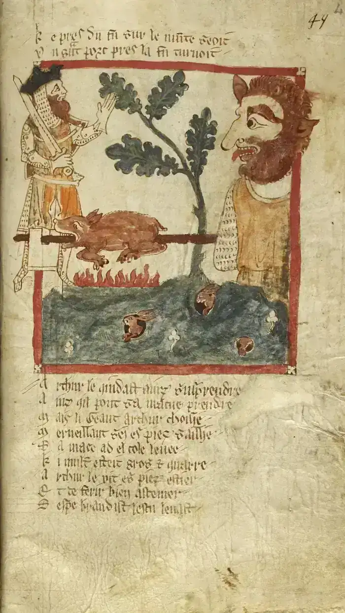

The sources
The earliest text to name Arthur is the Historia Brittonum, attributed to Nennius, written in the ninth century — three hundred years after the events it describes — which lists twelve battles. Gildas, writing in the sixth century, mentions the British victory at Mount Badon but does not name Arthur.
Maps, diagrams and images



There is no contemporary reference: no inscription, no letter, no chronicle written while he was alive. The medieval romances are later still, and are literature.
The Roman hypothesis
The modern argument is that if there was a historical Arthur, he was a post-Roman British war leader — possibly a cavalry commander — and several candidates have been proposed, including Lucius Artorius Castus, a second-century Roman officer whose name resembles Arthur's and who served in Britain.
The name link is suggestive and the chronology is wrong: Artorius Castus lived some three hundred years before the period Arthur is supposed to have fought in. The identification requires the legend to have migrated across centuries, which is possible and unevidenced.
Documented: a post-Roman British elite, warfare, and a victory at Badon.
Documented: the name Arthur in ninth-century sources.
Not documented: Arthur himself, in any contemporary source.
Contested: every candidate identification, including the Roman ones.
The honest position: a legend with a possible historical core, and no evidence sufficient to name the man.
Why it is in the archive
Because it is the archive's example of a claim where the absence of evidence is itself the finding, and where the search has been going on for so long that the absence has become the subject.
Open resources on this topic
- PapersOpen-access articles: DOAJ · PubMed Central · Internet Archive Scholar
- BooksPublic-domain and borrowable copies: Open Library · Project Gutenberg · Google Books · Internet Archive
Cite this page
Momin, S. (2026). Arthur as a Roman Commander. The Larger World Archive. https://drsamonline.github.io/LARGE_GLOBE/arthur-roman.htmlMomin, Sohil. “Arthur as a Roman Commander.” The Larger World Archive, 2026, https://drsamonline.github.io/LARGE_GLOBE/arthur-roman.html.Momin, Sohil. “Arthur as a Roman Commander.” The Larger World Archive, 2026. https://drsamonline.github.io/LARGE_GLOBE/arthur-roman.html.@misc{arthur2026arthur,
author = {Momin, Sohil},
title = {Arthur as a Roman Commander},
year = {2026},
howpublished = {The Larger World Archive},
url = {https://drsamonline.github.io/LARGE_GLOBE/arthur-roman.html},
note = {Last reviewed 20 November 2026}
}Last reviewed 20 November 2026 · Corrections policy · this page is not peer reviewed
Sources for this page
- Wikipedia, “King Arthur” — the sources and the historical debateen.wikipedia.org
- Wikipedia, “Historia Brittonum” — the earliest text naming himen.wikipedia.org
- Wikipedia, “Lucius Artorius Castus” — the Roman candidateen.wikipedia.org
- Wikipedia, “Sub-Roman Britain” — the period the legend fitsen.wikipedia.org